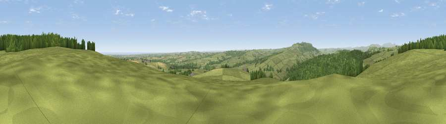

Viewpoint near Longframlington
#3515 in England · top 11% of its area beats it · near LongframlingtonWhere it is
The exact computed spot (NU 10012 02025). Click the marker for map links.
The view, rendered

A 360° render of this exact spot computed from the terrain model, tree cover and land cover — summer colours, afternoon light, calibrated against photographs of famous viewpoints. Real trees, hedges and buildings will differ in detail.
The panorama
Grey silhouette: terrain skyline in each direction (720 bearings, Earth curvature and refraction included). Dashed green: skyline with trees (+15 m) and buildings (+8 m) as obstacles. Blue strip: how far the ground is visible on each bearing.
Where the view opens
Wedge length = distance to the farthest visible ground on that bearing (vegetation-aware). Rings at 10, 25 and 50 km.
What fills the view
67% grassland · 28% woodland · 3% cropland · 1% water
Angular shares of the visible panorama (visual magnitude), not map area. Landscape diversity 0.35 (0–1 Shannon).
Key numbers
More beautiful places nearby
The staircase of upgrades: each row has a higher view potential than everything closer. Driving times are estimates from straight-line distance, calibrated against real road routing — check an actual route before setting out.
| Place | Direction | Drive | Score |
|---|---|---|---|
| Viewpoint near Longframlington | NE · 1 km | ~4 min | 79.5 |
| Viewpoint near Whittingham | NW · 6 km | ~13 min | 80.5 |
| Viewpoint near Rothbury | WSW · 7 km | ~14 min | 81.1 |
| Dove Crag | WSW · 7 km | ~15 min | 82.3 |
| Viewpoint near Glanton | N · 14 km | ~25 min | 82.9 |
| Viewpoint near Eglingham | N · 20 km | ~33 min | 83.8 |
| Viewpoint near Chillingham | N · 23 km | ~38 min | 88.1 |
| Viewpoint near Easington | SE · 104 km | ~129 min | 90.2 |
55.31221, -1.84380 · source: screening · position refined by local search. Computed location — check access rights before visiting.